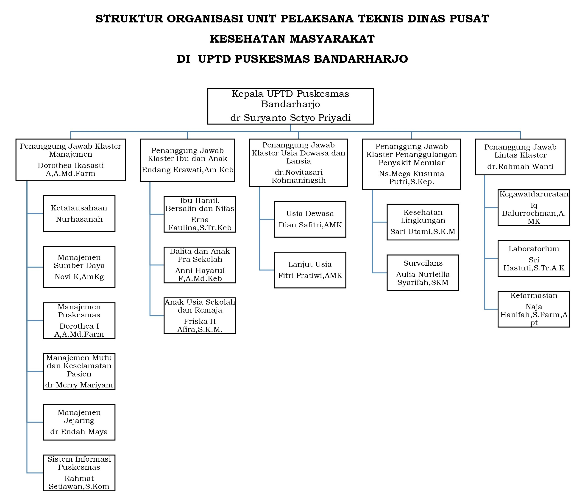

Alamat: Jl. Layur No.93 Rt.05 Rw.04, Kelurahan Dadapsari, Kecamatan Semarang Utara, Kota Semarang
Telepon: 0858 0000 8153
Email: puskesmasbandarharjo@yahoo.co.id
Visi: "Terwujudnya Pelayanan Kesehatan Prima menuju Masyarakat yang Mandiri untuk Hidup Sehat pada Tahun 2030"
Misi:
Moto:
Puskesmas Bandarharjo didirikan untuk memenuhi kebutuhan layanan kesehatan di wilayah Semarang Utara. Saat ini, Puskesmas ini telah dilengkapi dengan fasilitas modern dan tenaga kesehatan yang profesional.
Gambar di atas menunjukkan struktur organisasi Puskesmas Bandarharjo yang terdiri dari Kepala Puskesmas, Tata Usaha, beberapa unit layanan seperti UKP Kefarmasian, laboratorium, dan unit-unit pendukung lainnya.